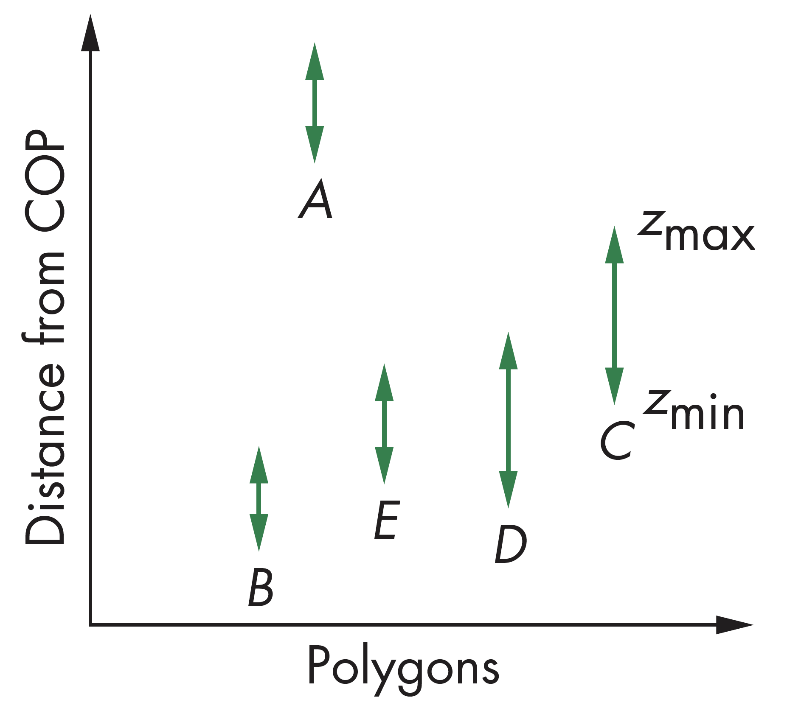
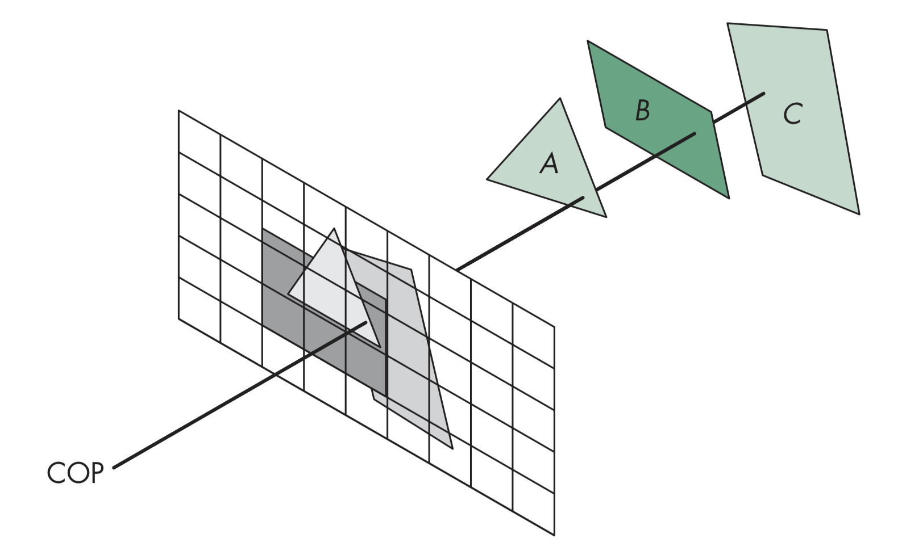
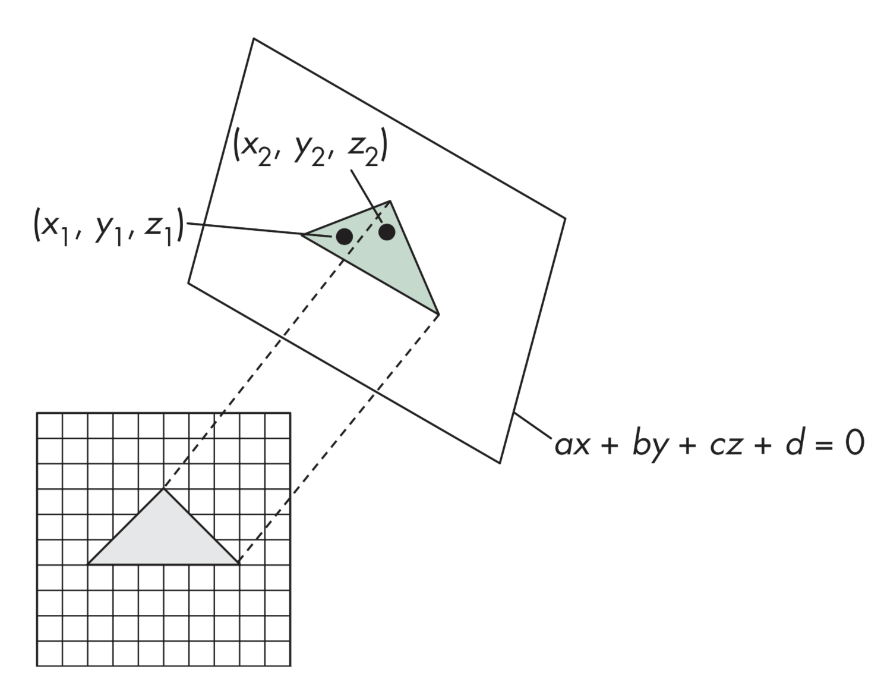

计算机图形学
第八章 从几何到像素
隐面消除
隐面消除
对象空间方法
对象空间方法，对物体两两进行测试遮挡性，其最差情况下n个多边形复杂度为$O(n^2)$

隐面消除
画家算法
利用画家算法绘制时，遵循从后往前的顺序绘制多边形，以此保证位于后方的多边形会被前方的多边形遮挡

隐面消除
深度排序
画家算法要求对多边形先按照深度排序，一般计算复杂度为$O(n\log{n})$，但也存在一些三角形并不完全位于某些三角形前方或完全位于某些三角形后方，存在简单情形和复杂情形
隐面消除
深度排序简单情形
如果多边形A位于所有多边形的后面，则可直接绘制该多边形。
若多边形在Z方向上有重叠，但在X和Y方向上都没重叠，可以在几个方向上分别独立绘制

隐面消除
深度排序复杂情形
所有方向上均有重叠，在一个方向上完全位于另一个的一侧
循环重叠(Cyclic Overlap)

穿透重叠(Penetration)
隐面消除
背面剔除
- 只有当$-90\leq \theta \leq 90$，面片才可见，这等价于$\cos{\theta}\geq 0$，即$\mathbf{v}\cdot \mathbf{n}\geq 0$
- 面片所在平面有方程$ax+by+cz+d=0$，正则化后令$n=\begin{bmatrix}0&0&1&0\end{bmatrix}^T$
- 只需要检查$c$的符号
- 在OpenGL中，可通过状态开关控制实现背面消隐功能，但如果对象为非凸，结果可能会有错
隐面消除
图像空间方法
图像空间方法通过查看每条投影线(对$m\times n$的帧缓存，总共有$nm$个)，找到距离最近的$k$个多边形，其计算复杂度为$O(mnk)$，主要方法包括光线跟踪算法、Z-Buffer算法等
隐面消除
Z-Buffer算法
Z-Buffer算法主要思想是利用一个Z缓存，或深度缓存存储对每个像素所找到的最近的对象的深度值，在渲染每个多边形时，将每个像素的深度值与深度缓存中的值进行比较，若小于深度缓存中的值，更新深度缓存中的值为当前像素的深度值，并设置对应的颜色为当前像素的颜色

隐面消除
算法效率
如果沿着扫描线方向移动时，深度值的改变量满足$a\Delta x+b\Delta y+c\Delta z = 0$, 沿着扫描线方向有$\Delta y=0, \Delta z=-\frac{a}{c}$，在屏幕空间则有$\Delta x=1$
隐面消除
扫描线算法
通过扫描线算法，可以把着色和隐面消除结合起来
扫描线i: 不需要深度信息，只可能在一个多边形内，或不在多边形内
扫描线j: 当扫描线通过多个多边形时需要深度信息
隐面消除
实现
实现算法需要特定数据结构存储相关信息，包括:
- 每个多边形的标记，用于标记扫描线是在多边形内，还是多边形外
- 扫描线增量结构，用于存储当前扫描线遇到的是哪条边
- 平面参数
隐面消除
可见性测试
在实际应用中，一般希望尽可能多地消除不可见的物体对象，以降低流水线的计算负担，并是降低在总线上的数据传输，提高计算性能和效率。为进行可见性测试，一般可利用BSP树对空间进行划分
隐面消除
BSP树示例
考虑由六个平行的多边形

从顶视图看下去如下图所示，多边形A将B、C和D、E、F分隔开

隐面消除
BSP树
对前面的树可进一步分隔有，多边形C分开了B和A，多边形D分开了E和F，其树结构如下图所示

信息可以存储在BSP树中，用于可见性和遮挡测试